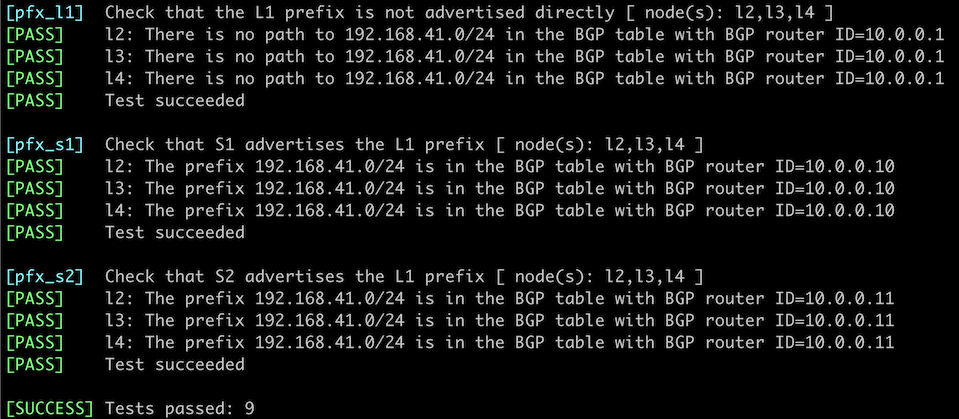

Use BGP Route Reflectors
In the Build a Transit Network with IBGP lab exercise, you learned the basics of IBGP, including the need to have a full mesh of IBGP sessions between all BGP-speaking routers in an autonomous system.
The original BGP protocol (defined in RFC 4271) needed a full mesh of IBGP sessions because it had no attribute that could be used to detect routing loops within an autonomous system (AS path is used between autonomous systems). BGP Route Reflection feature (defined in RFC 4456) adds the extra attributes needed for intra-AS loop detection and allows you to build large networks with a hub-and-spoke topology of IBGP sessions. That’s what you’ll practice in this lab exercise.
Lab Topology
You’ll work with a slightly larger lab containing six routers connected into a leaf-and-spine fabric:

The following diagram shows the IBGP sessions needed to distribute routing information (IPv4 prefixes of loopback interfaces) between all routers in your network:

During the lab exercise, you’ll remove all IBGP sessions between leaf routers and turn spine routers into BGP route reflectors, resulting in the following IBGP sessions:

Tip
Please note there’s still an IBGP session between the two spine routers. Removing it would reduce the resiliency of BGP routing in your network.
Start the Lab
Assuming you already set up your lab infrastructure, change directory to ibgp/3-rr
You can choose between these lab topologies:
topology.yml: 6-router topology with a full mesh of IBGP sessions. Start with netlab up (device requirements)hub-spoke.yml: 6-router topology with hub-and-spoke IBGP sessions. Start with netlab up hub-spoke.yml.4-router.yml: 4-router topology (two leaves, two spines) with hub-and-spoke IBGP sessions and FRRouting running on the leaf routers. Use this topology when you’re low on memory; start it with netlab up 4-router.yml.
After starting the lab, log into lab devices with netlab connect and verify that netlab correctly configured their IP addresses, OSPF routing, and EBGP sessions.
Lab Configuration
netlab will configure IP addressing, OSPF, and a full mesh of IBGP sessions on the lab devices.
BGP router identifiers and advertised prefixes
| Node/ASN | Router ID | Advertised prefixes |
|---|---|---|
| AS65000 | ||
| l1 | 10.0.0.1 | 192.168.41.0/24 |
| l2 | 10.0.0.2 | 192.168.42.0/24 |
| l3 | 10.0.0.3 | 192.168.43.0/24 |
| l4 | 10.0.0.4 | 192.168.44.0/24 |
| s1 | 10.0.0.10 | |
| s2 | 10.0.0.11 |
BGP neighbors (6-router topology)
| Node | Router ID / Neighbor |
Router AS/ Neighbor AS |
Neighbor IPv4 |
|---|---|---|---|
| l1 | 10.0.0.1 | 65000 | |
| l2 | 65000 | 10.0.0.2 | |
| l3 | 65000 | 10.0.0.3 | |
| l4 | 65000 | 10.0.0.4 | |
| s1 | 65000 | 10.0.0.10 | |
| s2 | 65000 | 10.0.0.11 | |
| l2 | 10.0.0.2 | 65000 | |
| l1 | 65000 | 10.0.0.1 | |
| l3 | 65000 | 10.0.0.3 | |
| l4 | 65000 | 10.0.0.4 | |
| s1 | 65000 | 10.0.0.10 | |
| s2 | 65000 | 10.0.0.11 | |
| l3 | 10.0.0.3 | 65000 | |
| l1 | 65000 | 10.0.0.1 | |
| l2 | 65000 | 10.0.0.2 | |
| l4 | 65000 | 10.0.0.4 | |
| s1 | 65000 | 10.0.0.10 | |
| s2 | 65000 | 10.0.0.11 | |
| l4 | 10.0.0.4 | 65000 | |
| l1 | 65000 | 10.0.0.1 | |
| l2 | 65000 | 10.0.0.2 | |
| l3 | 65000 | 10.0.0.3 | |
| s1 | 65000 | 10.0.0.10 | |
| s2 | 65000 | 10.0.0.11 | |
| s1 | 10.0.0.10 | 65000 | |
| l1 | 65000 | 10.0.0.1 | |
| l2 | 65000 | 10.0.0.2 | |
| l3 | 65000 | 10.0.0.3 | |
| l4 | 65000 | 10.0.0.4 | |
| s2 | 65000 | 10.0.0.11 | |
| s2 | 10.0.0.11 | 65000 | |
| l1 | 65000 | 10.0.0.1 | |
| l2 | 65000 | 10.0.0.2 | |
| l3 | 65000 | 10.0.0.3 | |
| l4 | 65000 | 10.0.0.4 | |
| s1 | 65000 | 10.0.0.10 |
Cutting the Mesh
Log into L4 and inspect its BGP table. It should contain four prefixes (each leaf router advertises a BGP prefix). This is the printout you’d get when using FRRouting containers:
Original BGP table on L4
l4# show ip bgp
BGP table version is 4, local router ID is 10.0.0.4, vrf id 0
Default local pref 100, local AS 65000
Status codes: s suppressed, d damped, h history, * valid, > best, = multipath,
i internal, r RIB-failure, S Stale, R Removed
Nexthop codes: @NNN nexthop's vrf id, < announce-nh-self
Origin codes: i - IGP, e - EGP, ? - incomplete
RPKI validation codes: V valid, I invalid, N Not found
Network Next Hop Metric LocPrf Weight Path
*>i192.168.41.0/24 10.0.0.1(l1) 0 100 0 i
*>i192.168.42.0/24 10.0.0.2(l2) 0 100 0 i
*>i192.168.43.0/24 10.0.0.3(l3) 0 100 0 i
*> 192.168.44.0/24 0.0.0.0(l4) 0 32768 i
Displayed 4 routes and 4 total paths
Next, log into all leaf routers and remove IBGP sessions with other leaf routers. After completing this part of the exercise, you should have two BGP neighbors on every leaf router.
Tip
If you don’t like the extra practice, start the hub-spoke.yml lab topology.
You’ll also notice that L4 no longer knows how to reach the other leaf switches:
The BGP table on L4 no longer contains other leaf prefixes
l4# show ip bgp
BGP table version is 7, local router ID is 10.0.0.4, vrf id 0
Default local pref 100, local AS 65000
Status codes: s suppressed, d damped, h history, * valid, > best, = multipath,
i internal, r RIB-failure, S Stale, R Removed
Nexthop codes: @NNN nexthop's vrf id, < announce-nh-self
Origin codes: i - IGP, e - EGP, ? - incomplete
RPKI validation codes: V valid, I invalid, N Not found
Network Next Hop Metric LocPrf Weight Path
*> 192.168.44.0/24 0.0.0.0(l4) 0 32768 i
Displayed 1 routes and 1 total paths
Adding Route Reflectors
Reducing the number of IBGP sessions in our network is good, but we still need full connectivity between leaf routers. You could advertise the default route or an aggregate prefix from the spine routers (try it out); we’ll turn them into route reflectors:
- Configure IBGP neighbors to be route reflector clients on both spine routers. neighbor route-reflector-client is a typical configuration command you would use.
Verification
Log into L4 and inspect its BGP table. As both route reflectors (S1 and S2) send IBGP routes to L4, you should see two copies of every leaf prefix:
BGP table on L4 after the introduction of route reflectors
l4# show ip bgp
BGP table version is 13, local router ID is 10.0.0.4, vrf id 0
Default local pref 100, local AS 65000
Status codes: s suppressed, d damped, h history, * valid, > best, = multipath,
i internal, r RIB-failure, S Stale, R Removed
Nexthop codes: @NNN nexthop's vrf id, < announce-nh-self
Origin codes: i - IGP, e - EGP, ? - incomplete
RPKI validation codes: V valid, I invalid, N Not found
Network Next Hop Metric LocPrf Weight Path
*>i192.168.41.0/24 10.0.0.1(s1) 0 100 0 i
* i 10.0.0.1(s2) 0 100 0 i
*>i192.168.42.0/24 10.0.0.2(s1) 0 100 0 i
* i 10.0.0.2(s2) 0 100 0 i
*>i192.168.43.0/24 10.0.0.3(s1) 0 100 0 i
* i 10.0.0.3(s2) 0 100 0 i
*> 192.168.44.0/24 0.0.0.0(l4) 0 32768 i
Displayed 4 routes and 7 total paths
Some devices (including Arista EOS) will also show additional BGP attributes attached to reflected routes (ORIGINATOR_ID and CLUSTER_LIST). Alternatively, you can inspect a single BGP prefix on most network devices to see the route reflection-related attributes:
The details of the BGP prefix advertised by L1 as seen by L4
l4# show ip bgp 192.168.41.0/24
BGP routing table entry for 192.168.41.0/24, version 11
Paths: (2 available, best #1, table default)
Not advertised to any peer
Local
10.0.0.1(s1) (metric 20) from s1(10.0.0.10) (10.0.0.1)
Origin IGP, metric 0, localpref 100, valid, internal, bestpath-from-AS Local, best (Neighbor IP)
Originator: 10.0.0.1, Cluster list: 10.0.0.10
Last update: Tue Oct 1 19:04:57 2024
Local
10.0.0.1(s2) (metric 20) from s2(10.0.0.11) (10.0.0.1)
Origin IGP, metric 0, localpref 100, valid, internal
Originator: 10.0.0.1, Cluster list: 10.0.0.11
Last update: Tue Oct 1 19:04:43 2024
Next:
- Use BGP session templates to make the BGP configuration on the BGP route reflectors scalable.
- Configure a BGP Route Server – functionality similar to BGP Route Reflectors, but for EBGP sessions.
Automated Verification
You can use the netlab validate command if you’ve installed netlab release 1.8.3 or later and use Cumulus Linux, FRR, or Arista EOS on leaf devices. The validation tests check:
- Whether the leaf devices get BGP prefixes directly from other leaf devices (you forgot to remove the leaf-to-leaf IBGP sessions)
- Whether the leaf devices get BGP prefixes from both spine devices (spine devices work as route reflectors).
This is the printout validating the L1 prefix1:

Alternate Solutions
Your lab uses a very structured addressing scheme, so you can advertise an aggregate prefix (for example, 192.168.0.0/16) from the spine routers to fix the routing in your lab. You could advertise the default route from the spine routers in a less structured lab.
You can easily try out both solutions:
- Start the
hub-spoke.ymllab topology with netlab up hub-spoke.yml - Configure an aggregate prefix on both spine routers (see BGP Route Aggregation exercise for more details) or configure default route advertisement on spine routers with a configuration command similar to neighbor default-originate always.
Reference Information
Device Requirements
- Use any device supported by the netlab BGP and OSPF configuration modules as leaf- or spine routers.
- You can do automated lab validation with Arista EOS, Cumulus Linux, or FRR running on leaf devices. Automated lab validation requires netlab release 1.8.3 or higher.
Lab Wiring
6-router topology
| Origin Device | Origin Port | Destination Device | Destination Port |
|---|---|---|---|
| l1 | eth1 | s1 | eth1 |
| l1 | eth2 | s2 | eth1 |
| l2 | eth1 | s1 | eth2 |
| l2 | eth2 | s2 | eth2 |
| l3 | eth1 | s1 | eth3 |
| l3 | eth2 | s2 | eth3 |
| l4 | eth1 | s1 | eth4 |
| l4 | eth2 | s2 | eth4 |
4-router topology
| Link Name | Origin Device | Origin Port | Destination Device | Destination Port |
|---|---|---|---|---|
| S1-L1 | s1 | Ethernet1 | l1 | swp1 |
| S1-L2 | s1 | Ethernet2 | l2 | swp1 |
| Unused link | l1 | swp2 | l2 | swp2 |
| S2-L1 | s2 | Ethernet1 | l1 | swp3 |
| S2-L2 | s2 | Ethernet2 | l2 | swp3 |
| Unused link | s1 | Ethernet3 | s2 | Ethernet3 |
Note: Some interfaces are not used to conform with the predefined 4-router lab topology.
Lab Addressing
6-router topology
| Node/Interface | IPv4 Address | IPv6 Address | Description |
|---|---|---|---|
| l1 | 10.0.0.1/32 | Loopback | |
| eth1 | 10.1.0.1/30 | l1 -> s1 | |
| eth2 | 10.1.0.5/30 | l1 -> s2 | |
| l2 | 10.0.0.2/32 | Loopback | |
| eth1 | 10.1.0.9/30 | l2 -> s1 | |
| eth2 | 10.1.0.13/30 | l2 -> s2 | |
| l3 | 10.0.0.3/32 | Loopback | |
| eth1 | 10.1.0.17/30 | l3 -> s1 | |
| eth2 | 10.1.0.21/30 | l3 -> s2 | |
| l4 | 10.0.0.4/32 | Loopback | |
| eth1 | 10.1.0.25/30 | l4 -> s1 | |
| eth2 | 10.1.0.29/30 | l4 -> s2 | |
| s1 | 10.0.0.10/32 | Loopback | |
| eth1 | 10.1.0.2/30 | s1 -> l1 | |
| eth2 | 10.1.0.10/30 | s1 -> l2 | |
| eth3 | 10.1.0.18/30 | s1 -> l3 | |
| eth4 | 10.1.0.26/30 | s1 -> l4 | |
| s2 | 10.0.0.11/32 | Loopback | |
| eth1 | 10.1.0.6/30 | s2 -> l1 | |
| eth2 | 10.1.0.14/30 | s2 -> l2 | |
| eth3 | 10.1.0.22/30 | s2 -> l3 | |
| eth4 | 10.1.0.30/30 | s2 -> l4 |
4-router topology
| Node/Interface | IPv4 Address | IPv6 Address | Description |
|---|---|---|---|
| l1 | 10.0.0.1/32 | Loopback | |
| swp1 | 10.1.0.1/30 | S1-L1 | |
| swp2 | Unused link | ||
| swp3 | 10.1.0.9/30 | S2-L1 | |
| l2 | 10.0.0.2/32 | Loopback | |
| swp1 | 10.1.0.5/30 | S1-L2 | |
| swp2 | Unused link | ||
| swp3 | 10.1.0.13/30 | S2-L2 | |
| s1 | 10.0.0.10/32 | Loopback | |
| Ethernet1 | 10.1.0.2/30 | S1-L1 | |
| Ethernet2 | 10.1.0.6/30 | S1-L2 | |
| Ethernet3 | Unused link | ||
| s2 | 10.0.0.11/32 | Loopback | |
| Ethernet1 | 10.1.0.10/30 | S2-L1 | |
| Ethernet2 | 10.1.0.14/30 | S2-L2 | |
| Ethernet3 | Unused link |
Note: Some interfaces are not configured with IP addresses to conform with the predefined 4-router lab topology.
-
The complete validation results are too long to include in the lab description. ↩